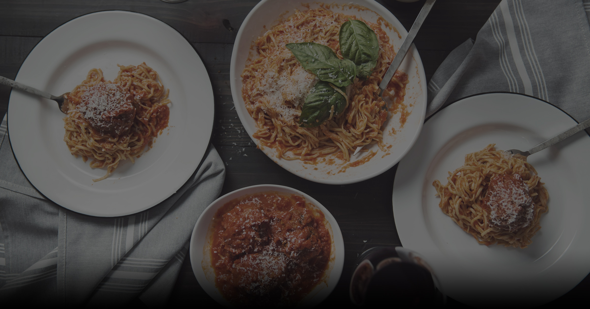

Scratch-Made Pastas
Every noodle is mixed, rolled, and cut in-house using Italian semolina and farm eggs: Pappardelle Bolognese, Fettuccine Carbonara, and Rigatoni alla Vodka.
Our Pasta Lab →Welcome to Zinicola, Ballantyne’s neighborhood Italian restaurant and wine bar founded by Chef Richard Cranmer. We celebrate the timeless soul of Italian culinary heritage through handmade daily scratch pastas, wood-fired hearth pizzas, house-infused 'cellos, and regional Italian wines.

Rooted in pure ingredients, meticulous hand-rolling, and genuine Italian warmth.
Every noodle is mixed, rolled, and cut in-house using Italian semolina and farm eggs: Pappardelle Bolognese, Fettuccine Carbonara, and Rigatoni alla Vodka.
Our Pasta Lab →Slow-fermented doughs hand-stretched to order, topped with San Marzano D.O.P. tomatoes, fresh mozzarella fior di latte, and blistered at high heat.
View Pizza Menu →Crafted in small batches with real organic citrus: Limoncello, Strawberrycello, and Crema di Limoncello, alongside curated Italian regional wines.
Explore Cellar →From slow-simmered ragù Bolognese simmered for eight hours to velvety Carnaroli risottos and delicate ravioli filled with fresh ricotta, Chef Richard Cranmer honors classical Italian culinary discipline in every dish.
Discover The Craft →
Join us for lunch, dinner, or evening wine and antipasti on our covered Ballantyne Village patio.
Hours & Reservations →